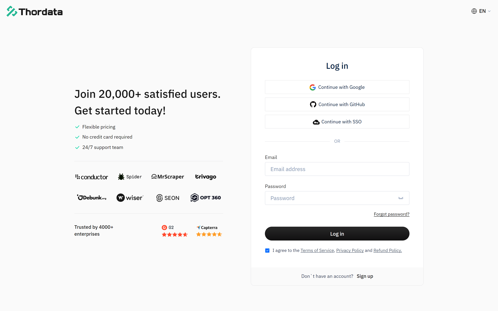
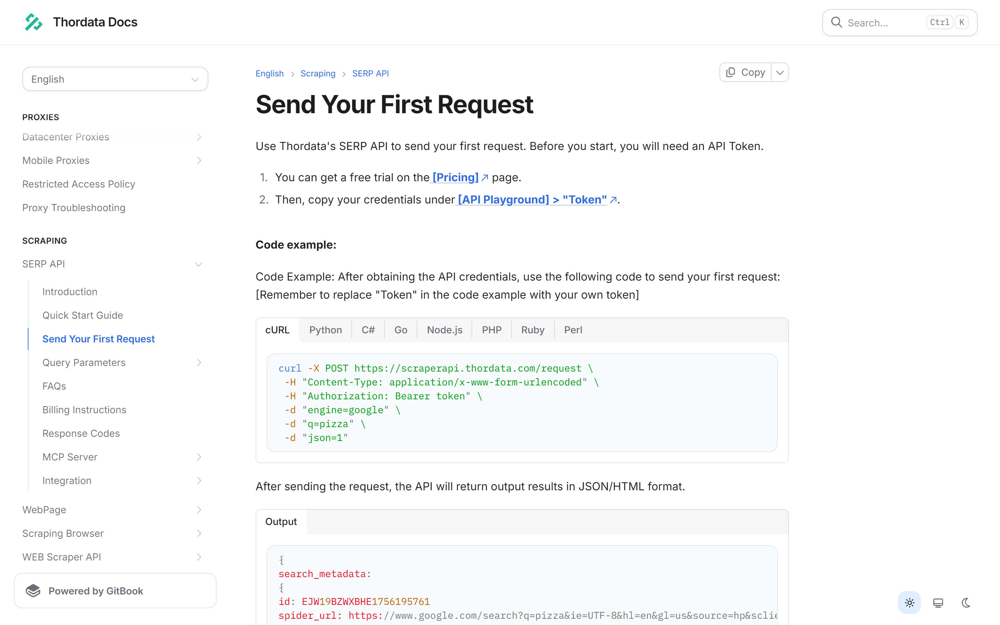
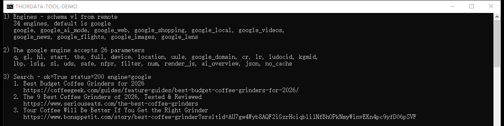
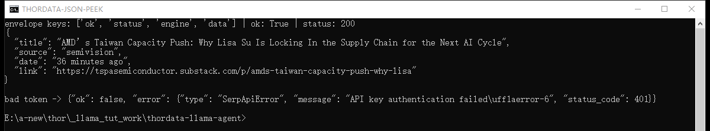
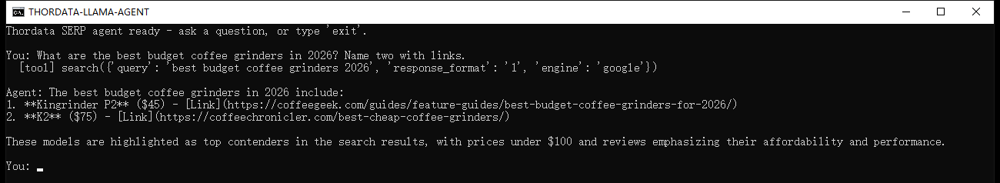

A step-by-step guide to giving a LlamaIndex agent real-time search results: install the Thordata SERP tool spec, read the live engine schema it fetches, run a search, and let a FunctionAgent answer questions with data that did not exist when the model was trained.
An LLM on its own knows what it was trained on. Ask it about this week's search results and it will either refuse or, worse, invent an answer. The fix is not a bigger model — it is giving the model a tool that fetches the current page and hands back structured data it can cite.
This tutorial builds exactly that, end to end, using the Thordata SERP tool for LlamaIndex. It is deliberately narrow: one tool family, three tools, one agent. No vector stores, no ingestion pipelines — this is the search half of the picture, wired so an agent can use it.
In this guide you will learn how to:
llama-index-tools-thordata-serp and load ThordataSerpToolSpecFunctionAgentLlamaIndex is an open-source Python framework for building applications on top of large language models. The project sits at around 52,000 stars on GitHub and is MIT licensed; the version this tutorial was written against is llama-index-core 0.14.25.
The pieces you need for this tutorial are three:
OpenAI, OpenAILike, Anthropic, …) that normalizes chat and function-calling across vendors.A ToolSpec is LlamaIndex's packaging convention for a group of related tools. That is the shape the Thordata integration ships in: one class, ThordataSerpToolSpec, that exposes three tools and can be dropped into any agent that accepts tools.
Three properties of large language models make search tools necessary rather than optional:
The usual workaround — paste search results into the prompt by hand — does not survive contact with an agent, because the agent decides for itself which query to run and when. The tool has to be callable.
Fetching a search engine results page looks like a ten-line script and behaves like a maintenance contract. You end up owning CAPTCHA and bot-detection handling, proxy rotation, per-country and per-language result targeting, HTML that changes without notice, and a parser for every engine you touch. The parsing is the part teams underestimate: the interesting fields rarely live in one list — news results, answer boxes, local packs and related questions all sit in different places per engine.
Thordata's SERP API exists to own that half. One HTTPS request returns parsed JSON for the engine you asked for, with proxy handling and geolocation included.
Even with a good endpoint, an agent needs something a raw API does not give you: a set of parameters that is discoverable at runtime. Agents pick arguments themselves, and an agent that guesses a parameter name gets a 400 — or worse, silently searches the wrong thing.
The LlamaIndex package solves this with the schema Thordata publishes for its own playground. Before a request is sent, the tool checks your parameters against the live schema for the selected engine and drops anything that engine does not declare. That is the difference between "call this API" and "call this API from an agent": the tool is safe to expose to a model that has never read the docs.
The package is llama-index-tools-thordata-serp 0.2.0; the import path is llama_index.tools.thordata_serp. It requires Python 3.10 or newer and pulls in llama-index-core (>=0.13.0, <0.15), pydantic and requests.
One class — ThordataSerpToolSpec — exposes exactly three tools:
| Tool | What it does | Why an agent needs it |
|---|---|---|
list_engines() |
Returns the schema version, the default engine, the schema source and a compact record (key, name, query field) for every engine. | The agent can discover that google_news or google_maps exist instead of hard-coding a guess. |
get_engine_schema(engine) |
Returns one engine's complete parameter groups and fields, including types and allowed values. | The agent can check which parameter a query needs — q for most engines, departure_id for flights, url for Lens. |
search(engine, query, params, response_format, response_mode) |
Validates the parameters against the schema, sends the request and returns the parsed result inside a normalized envelope. | This is the actual search; everything the model can control goes through this one signature. |
Every tool returns a JSON string, not a Python object. Decode it with json.loads before reading fields. Successful calls and failures share one shape, so error handling never depends on exceptions:
{"ok": true, "status": 200, "engine": "google", "data": { ... }}
{"ok": false, "error": {"type": "SerpApiError", "status_code": 401, "message": "..."}}Two more behaviours are worth knowing before you write any glue code:
schema_source: "remote"; calls within the next five minutes report "cache". If the remote schema cannot be reached before any schema is loaded, the package falls back to a snapshot bundled inside the wheel and reports "snapshot". Only list_engines and get_engine_schema include that field — search returns ok, status, engine and data.The tool never reads environment variables itself. The API Token is always passed in explicitly (ThordataSerpToolSpec(api_key=...) — api_key is the package's own argument name, and the value it takes is the Thordata API Token). That is deliberate — it keeps configuration in your application instead of hiding it inside a dependency — and it is why every example below reads the API Token from the environment and hands it over.
>=3.10,<4.0; this tutorial was verified on 3.12.Everything lives in one folder with its own virtual environment:
mkdir thordata-llama-agent
cd thordata-llama-agent
python -m venv .venvActivate it — the command differs per shell:
# Windows (PowerShell)
.venv\Scripts\Activate.ps1
# Windows (cmd.exe)
.venv\Scripts\activate.bat
# macOS / Linux
source .venv/bin/activateThen install the tool package along with python-dotenv, which the scripts below use to read the .env file. The tool package brings llama-index-core, pydantic and requests with it, so this is the only install you need for the first steps:
python -m pip install llama-index-tools-thordata-serp python-dotenv.envTwo credentials are involved: the Thordata API Token and the LLM's API Token. Put both in a .env file next to the code and never in the source:
# Thordata SERP token, from the dashboard
# (SERP API -> API Token, also reachable as API Playground -> Token)
THORDATA_SERP_API_TOKEN=your-thordata-serp-token
# Any OpenAI-compatible endpoint. The values below are a local Ollama server;
# for a hosted provider use e.g. https://api.openai.com/v1 with your own model.
LLM_BASE_URL=http://127.0.0.1:11434/v1
LLM_MODEL=qwen3:1.7b
LLM_API_TOKEN=ollama
# Optional. Only needed for models whose context window LlamaIndex cannot look up.
# LLM_CONTEXT_WINDOW=32768Add .env to your .gitignore as the first thing you do. A committed API Token is a cancelled token.
Sign in to the Thordata dashboard and copy your SERP token — the documentation points at it from two places: the SERP API page (SERP API → API Token) and API Playground → Token. If you have not generated a token yet, generate one first; the free trial credits sit on the same page.

The token authenticates a plain HTTPS call, which is useful to see once before any Python is involved. The documentation's own first-request example is a good reference point, because the package you just installed is a wrapper around exactly this call:

scraperapi.thordata.com/request with a Bearer token, engine, the query and json=1.Under the hood, the tool posts to https://scraperapi.thordata.com/request with form-encoded fields (engine, the engine's query field, and json), and fetches the engine schema from https://api.thordata.com/serp/playground/schema?lang=en. You do not need to configure either one, but both can be overridden in the constructor if you route traffic through your own proxy.
Save this as tool_demo.py. It calls the package with no agent and no LLM involved — the fastest way to confirm the token works and to see the schema for yourself:
"""Call the Thordata SERP tool directly - no agent, no LLM involved."""
import json
import os
import textwrap
from dotenv import load_dotenv
from llama_index.tools.thordata_serp import ThordataSerpToolSpec
load_dotenv()
tool_spec = ThordataSerpToolSpec(api_key=os.environ["THORDATA_SERP_API_TOKEN"])
# 1. Which engines can this tool reach?
engines = json.loads(tool_spec.list_engines())
keys = [engine["key"] for engine in engines["engines"]]
print(f"1) Engines - schema v{engines['schema_version']} from {engines['schema_source']}")
print(f" {len(keys)} engines, default is {engines['default_engine']}")
print(textwrap.fill(", ".join(keys[:10]), width=96, initial_indent=" ", subsequent_indent=" "))
# 2. What parameters does the google engine accept?
schema = json.loads(tool_spec.get_engine_schema("google"))
fields = [field["key"] for group in schema["engine"]["groups"] for field in group["fields"]]
print(f"\n2) The google engine accepts {len(fields)} parameters")
print(textwrap.fill(", ".join(fields), width=96, initial_indent=" ", subsequent_indent=" "))
# 3. Run a search and print the organic results.
result = json.loads(
tool_spec.search(
engine="google",
query="best coffee grinders 2026",
params={"num": 3, "gl": "us", "hl": "en"},
response_mode="compact",
)
)
if not result["ok"]:
print(f"\n3) Search failed - {result['error']['type']}: {result['error']['message']}")
raise SystemExit(1)
print(f"\n3) Search - ok={result['ok']} status={result['status']} engine={result['engine']}")
for item in result["data"]["organic"]:
print(f" {item['position']}. {item['title']}")
print(f" {item['link']}")Run it with python tool_demo.py. Two things are worth pausing on in the output below. First, the schema came back from remote, not from the bundled snapshot. Second, the field list is the answer to "what can I pass?" — num, gl, hl, tbs, safe, location and twenty more for Google, all validated before anything is sent. The search block also checks ok before it reads any result field, so an invalid or expired token prints one readable line instead of a KeyError — the same guard the failure section below revisits.

The engine list is not decoration. Grouped by provider, the live schema currently offers 26 Google engines (Search, AI Mode, Web, Shopping, Local, Videos, News, Flights, Images, Lens, Trends, Hotels, Play, Jobs, Scholar, Maps, Finance, Patents and their variants), 6 Bing engines (Search, Images, Videos, News, Maps, Shopping), Yandex Search and DuckDuckGo Search. Because the schema is fetched at runtime, that list can grow without a package release.
Before handing the tool to a model, it is worth seeing exactly what the model will see. This snippet prints one news result and the envelope for a deliberately invalid token:
import json
import os
from dotenv import load_dotenv
from llama_index.tools.thordata_serp import ThordataSerpToolSpec
load_dotenv()
tool_spec = ThordataSerpToolSpec(api_key=os.environ["THORDATA_SERP_API_TOKEN"])
raw = tool_spec.search(
engine="google_news",
query="semiconductor supply chain",
response_mode="compact",
)
data = json.loads(raw)
if not data["ok"]:
raise SystemExit(f"search failed: {data['error']}")
print("envelope keys:", list(data.keys()), "| ok:", data["ok"], "| status:", data["status"])
headline = data["data"]["news"][0]
fields = {key: headline[key] for key in ("title", "source", "date", "link")}
print(json.dumps(fields, indent=2, ensure_ascii=False))
invalid_spec = ThordataSerpToolSpec(api_key="00000000000000000000000000000000")
bad = json.loads(invalid_spec.search(engine="google", query="test"))
print("\nbad token ->", json.dumps(bad))
The news result carries title, link, source, date, snippet and image_url; Google web results carry position, title, link and description under data.organic, alongside people_also_ask and related when the page has them. Other engines use their own key — places for Maps, shopping for Shopping, organic_results for Bing — which is why an agent should call get_engine_schema rather than assume one shape.
Use response_mode="compact" in agent code. It removes search_metadata, search_parameters, serpapi_pagination and request_metadata from the payload at every nesting level. Those fields are useful when debugging a request and pure waste in a context window the model has to read.
Leave response_format at its default. The tool sends it to the API as the json parameter and validates it locally: the accepted values are "1", "2" and "3", with "1" as the default. That accepted set does not line up with the engine schema's own list for the same field — 1 = JSON, 4 = Light JSON, 3 = HTML, 5 = Screenshot — so "4" and "5" cannot be requested at all (they come back as a validation error inside the envelope), while "3" is passed through even though the schema defines it as HTML. In our runs the endpoint returned the same parsed JSON for 1, 2 and 3, which is why the default is the safe choice for an agent.
The tool spec is complete without a model, but an agent is not. Install an OpenAI-compatible client — this one also works against any server that speaks the same API, which is what makes local models and self-hosted gateways usable here:
python -m pip install llama-index-llms-openai-likeThe agent code below reads three values from .env: LLM_BASE_URL, LLM_MODEL and LLM_API_TOKEN. Point them at OpenAI, at a local Ollama server, at vLLM, or at any provider that exposes an OpenAI-compatible endpoint — the code does not change. (If you use OpenAI's own models, OpenAI from llama-index-llms-openai works too; that class validates model names against OpenAI's catalogue, which is the one thing OpenAILike does not do.)
FunctionAgent is LlamaIndex's function-calling agent: it hands the tool schemas to the model, executes the calls the model asks for, and loops until the model answers. The system prompt is doing real work here — it tells the model to search before answering and to cite what it used, which is what keeps the answer grounded. Wrap it in a build_agent() function so the REPL can build the agent once at startup:
"""A LlamaIndex agent that answers questions with live Thordata SERP data."""
import asyncio
import os
from dotenv import load_dotenv
from llama_index.core.agent.workflow import FunctionAgent, ToolCallResult
from llama_index.llms.openai_like import OpenAILike
from llama_index.tools.thordata_serp import ThordataSerpToolSpec
load_dotenv()
SYSTEM_PROMPT = (
"You are a research assistant with a live web search tool. "
"Always call the search tool before you answer, keep the answer under 120 words, "
"and cite the result URLs you used."
)
def build_agent() -> FunctionAgent:
"""Wire the Thordata SERP tools and an OpenAI-compatible LLM into one agent."""
tool_spec = ThordataSerpToolSpec(api_key=os.environ["THORDATA_SERP_API_TOKEN"])
llm = OpenAILike(
model=os.environ["LLM_MODEL"],
api_base=os.environ["LLM_BASE_URL"],
api_key=os.environ["LLM_API_TOKEN"],
is_chat_model=True,
is_function_calling_model=True,
context_window=int(os.environ.get("LLM_CONTEXT_WINDOW", "32768")),
timeout=300,
)
return FunctionAgent(
tools=tool_spec.to_tool_list(),
llm=llm,
system_prompt=SYSTEM_PROMPT,
)Three details in that block are easy to miss and each one costs an hour if you do:
to_tool_list() is what converts the ToolSpec into the tool objects the agent accepts. Passing the ToolSpec itself will not work.is_chat_model and is_function_calling_model must be set to True for any non-OpenAI model name. The flags are read when a request is built, not when the agent is constructed, so a mistake here surfaces on the first agent.run() — and the two flags fail differently: without is_function_calling_model you get "LLM must be a FunctionCallingLLM"; with that flag set but is_chat_model left at its default, the call goes to the completions endpoint instead of chat completions and fails with "AsyncCompletions.create() got an unexpected keyword argument 'tools'".context_window has to be declared for the same reason — the framework cannot look up an unknown model name, and the default placeholder is far too small for a page of search results.Finally, a loop that asks a question and — this is the useful part — prints every tool call as it happens, using the real tool name and the arguments the model chose. Without it a slow answer looks like a hang; with it you can see that the model actually searched, and a metadata call such as list_engines() can never be mistaken for a search:
async def ask(agent: FunctionAgent, question: str) -> str:
"""Run one turn and report every tool call while the agent works."""
handler = agent.run(question)
async for event in handler.stream_events():
if isinstance(event, ToolCallResult):
print(f" [tool] {event.tool_name}({event.tool_kwargs})")
return str(await handler)
async def main() -> None:
agent = build_agent()
print("Thordata SERP agent ready - ask a question, or type 'exit'.")
while True:
question = input("\nYou: ").strip()
if question.lower() in {"exit", "quit"}:
break
if question:
print(f"\nAgent: {await ask(agent, question)}")
if __name__ == "__main__":
asyncio.run(main())Steps 7 and 8 together are the complete file — imports, agent and REPL — and it ships as code/agent.py next to this page. Copy it into the project you created in step 1 and run it:
python agent.pyHere is a real session. The question needs data from 2026, the model calls the search tool once with a query of its own choosing, and the answer cites two URLs that came back in that response:

Two checks make that screenshot trustworthy rather than merely convincing, and both are worth repeating with your own questions. The [tool] line names the tool the model actually called and prints the arguments it chose — search with a query, an engine and a response format in this run — so a metadata call such as list_engines() can never be mistaken for a search. And the cited links can be compared against the raw response for that query: in this run the top results were coffeegeek.com at position 1 and coffeechronicler.com at position 2, which is exactly what the answer cites.
Grounding is a property of your prompt and your model, not of the tool. In a second run of the same question, the local model kept the right search and the right top result, then attributed the second citation to a domain that was not in the response at all — a plausible-looking URL it invented. The tool returned clean data; the model embellished it. So keep two habits: log the tool calls, and spot-check that the URLs in an answer actually appear in the tool result.
Nothing about the agent is Google-specific. The engine is just an argument — the same tool covers news, maps and shopping, and the agent can pick the engine itself once list_engines is available to it:
news = tool_spec.search(engine="google_news", query="ai regulation", response_mode="compact")
places = tool_spec.search(engine="google_maps", query="coffee shops in seattle", params={"num": 3}, response_mode="compact")
prices = tool_spec.search(engine="google_shopping", query="espresso machine", params={"num": 3}, response_mode="compact")
papers = tool_spec.search(engine="google_scholar", query="retrieval augmented generation", params={"num": 3}, response_mode="compact")Each returns its own result key — news, places, shopping, organic — so if you consume them in code rather than through an agent, keep a small mapping table instead of assuming one field name.
The schema is the contract, and three Google parameters earn their place in almost every call:
num — how many results to return. Ten results of raw JSON is a lot of context; three is usually enough for a summary.gl — the country whose Google you are querying. Result sets differ per country, and a model has no way to infer which one you meant.hl — the interface language.Anything you pass that the selected engine does not declare is dropped before the request is sent, so a typo degrades into a default search rather than an error. That is forgiving in production and confusing while debugging — if a parameter seems to have no effect, call get_engine_schema and check the spelling against the field list.
Because every tool returns the same envelope, error handling is a single branch — including upstream failures, which arrive as ok: false with a status code:
result = json.loads(tool_spec.search(engine="google", query="coffee"))
if not result["ok"]:
print(result["error"]["type"], result["error"].get("status_code"), result["error"]["message"])In an agent, the same envelope is handed to the model, which means a failed search becomes something the model can react to — retry with a different query, or tell the user what it could not find — instead of an exception that ends the run.
schema_source when you need to know whether a run used a live schema, a cached one or the bundled snapshot.response_mode="compact" and a small num are cheaper than a larger context window.Pairing LlamaIndex with Thordata's SERP API gives you an agent built on two things you control: the tool runs in your own process, and every answer is fetched live at the moment it is asked for. The integration is small enough to read in one sitting — three tools and one envelope — and every part of it is swappable: change the engine, the query parameters, the LLM or the system prompt without touching the rest.
The same shape reaches well past Google web results. The tool exposes the platform's whole engine catalogue, so one argument is all it takes to move from web pages to news, shopping prices, scholarly papers, local listings or search trends — and because get_engine_schema tells the model what each engine accepts, the agent can make that choice itself. When you also need your own documents in the answer, feeding these results into a LlamaIndex index is the framework's other half, and it does not change anything above.
To point it at your own account, create an API token in the Thordata dashboard and keep doc.thordata.com open for the parameter reference — the SERP API section documents what each engine accepts. The two scripts and every screenshot used above are in this folder.